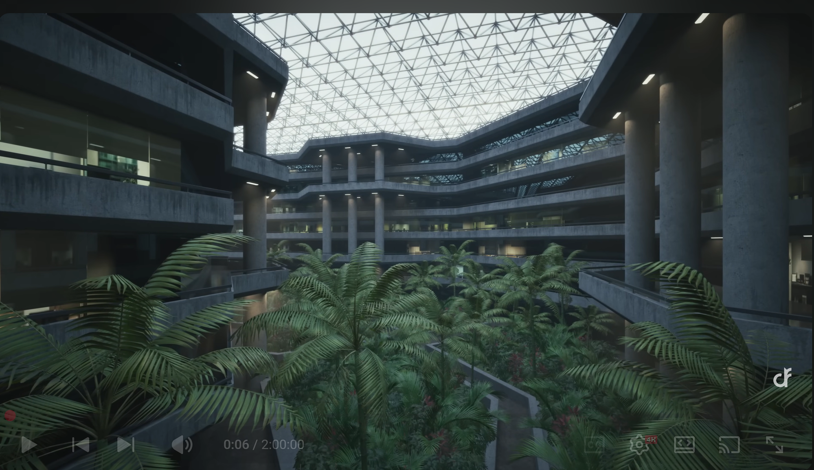
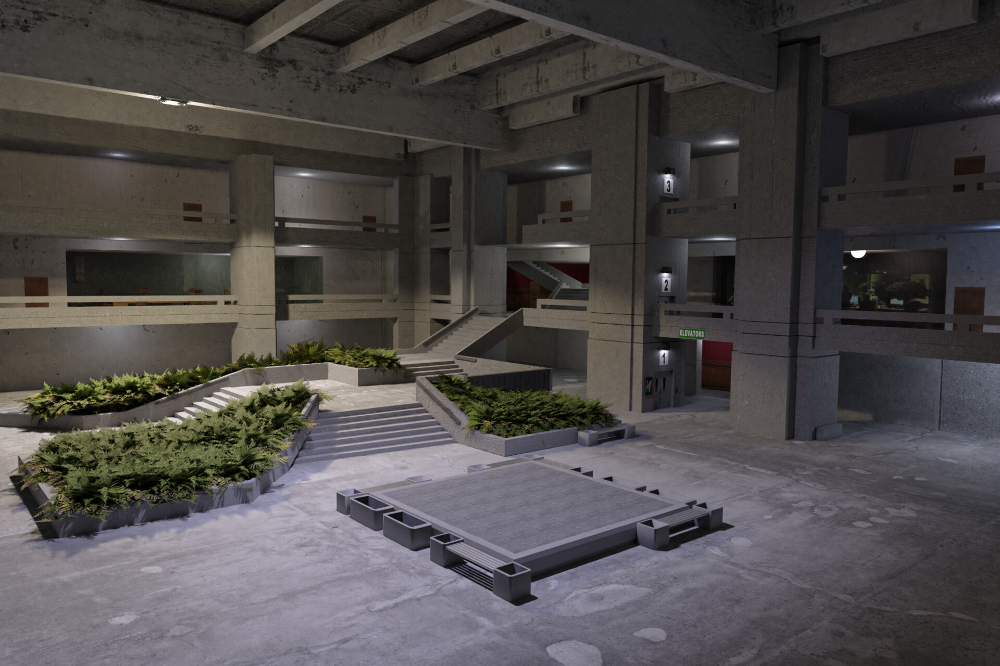
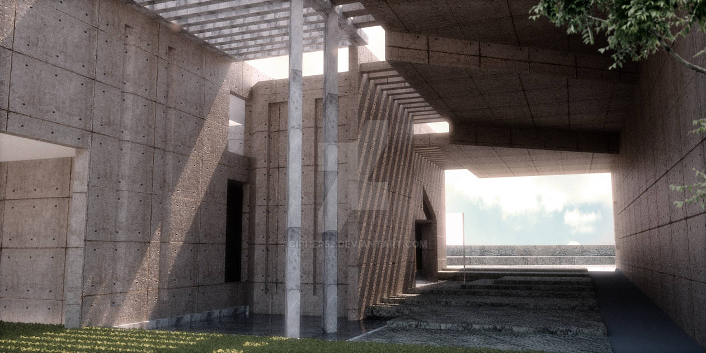
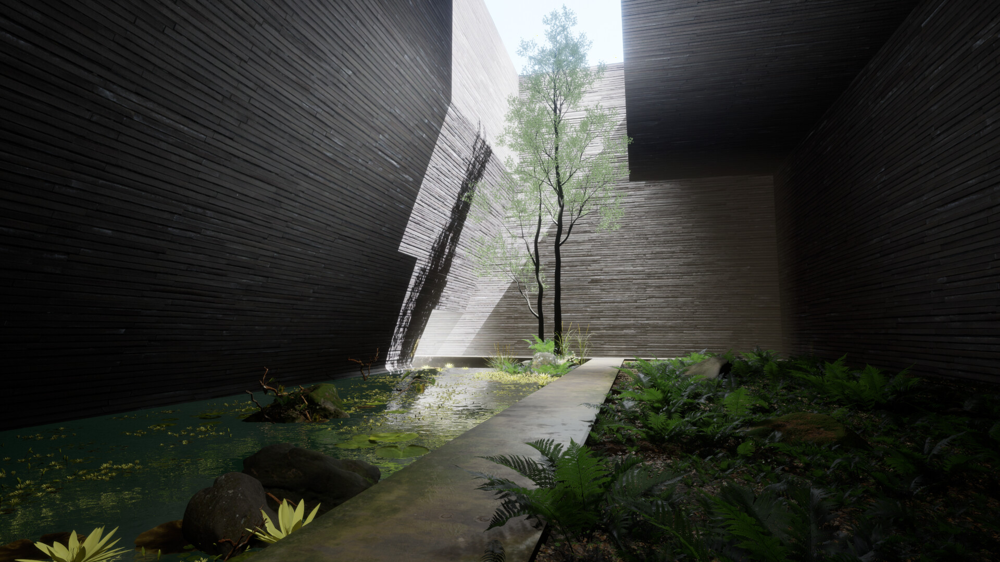
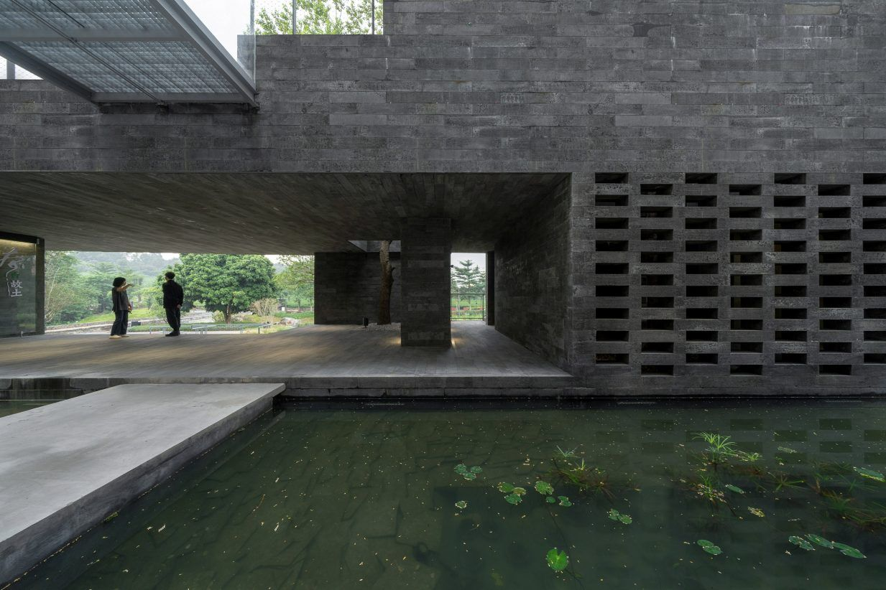

01 atrium: stacked slabs on columns under a space-frame roof, palms in planters

02 lobby: coffered ceiling, piers, mezzanine rails, stair wrapped in fern planters, sunken plaza

03 pergola court: board-formed walls, slatted pergola, wide stair to a terrace, deep overhang, lawn and water

05 slot garden: two tall walls, one walkway, pond left, ferns right

06 pond pavilion: cantilevered roof over a deck, perforated screen, reflecting pond, slab bridge